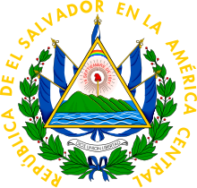

Simbolos Patrios
Bandera Nacional

Escudo
Ave

El Salvador tiene una rica historia que se remonta a lascivilizaciones precolombinas.
Los pueblos indígenas, como los pipiles y los lencas, habitaron esta tierra durante
siglos. Tras la conquista española, El Salvador formó parte del Virreinato de Nueva España y luego de la Capitanía
General de Guatemala. Alcanzó su independencia en 1821 y, tras un periodo de unión con otros países
centroamericanos, se convirtió en una república independiente en 1841.
El Salvador es el país más pequeño de Centroamérica continental, con una extensión territorial de aproximadamente 21.041
kilómetros cuadrados. Su territorio es mayormente montañoso, con volcanes activos y extensas zonas costeras en el
Pacífico y en menor medida en el Golfo de Fonseca.
El Salvador ofrece una gran variedad de atractivos turísticos, desde playas paradisíacas hasta ruinas arqueológicas y exuberante naturaleza. Algunos de los destinos más populares incluyen: